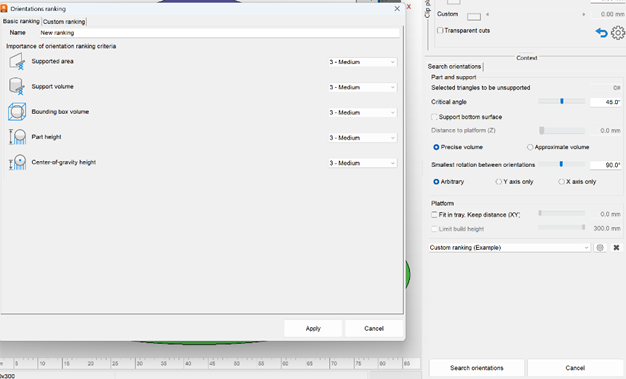
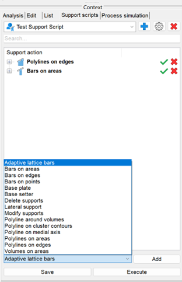
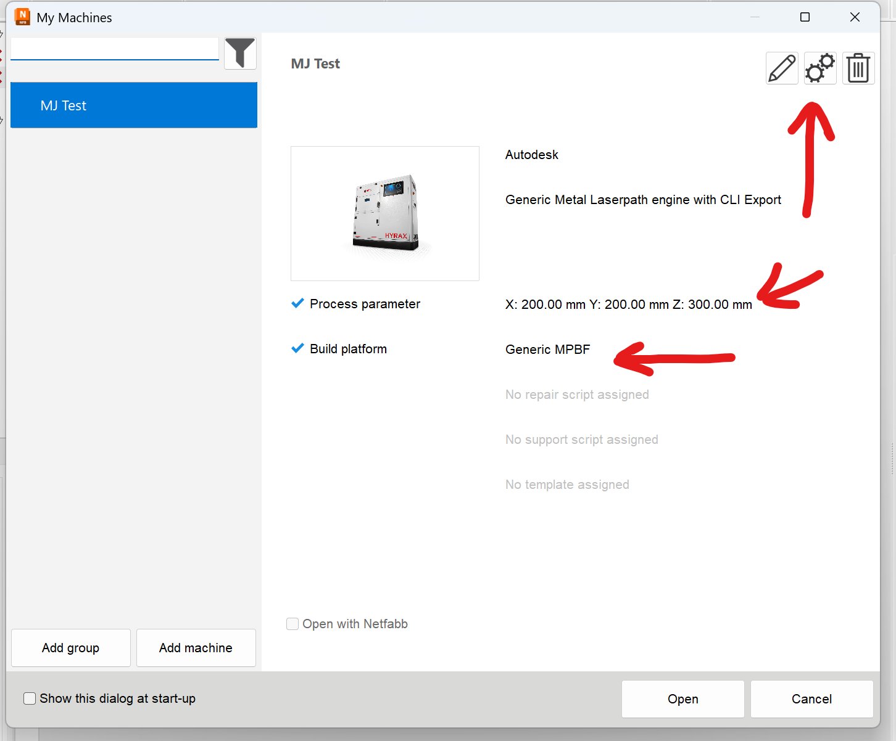
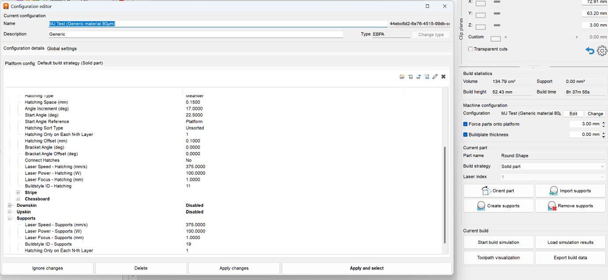

Netfabb Notes and General Information
Introduction
The scripts in this repository were written with the intention of making the quoting process easier. The goal is to quickly output a rough support and rough price estimation.
- Input: Client part files.
- Output: Finished statistics CSV (containing build time, support volume, part volume, and outbox volume of the tray).
Orientation and Support
The orientation and support addition are left to be done by the program, the employee, and the support scripts.
- There are heavy employee choices involved in this process.
- Automatic orientation is an extremely difficult task to program (see Help | PartOrienter | Autodesk).
- The part orienter in the Desktop Environment gives multiple options for ease of choice.
Custom Machine Configuration
For the custom machine, there is a file named No_Build that needs to be accessed via a file path every time a new machine is opened.
Resources
The most helpful place to search for functions and documentation is:
Autodesk Netfabb Help
Time Estimates
Maarten and Fanie walked through the parameters that get the time estimates.
- There will be a PDF named "Time Estimate Review Unsurety Document.pdf" that contains the diagnosis.
Guides
How to edit the machine and no build zone

The .support scripts

The time estimate parameters

The orientation rankings
